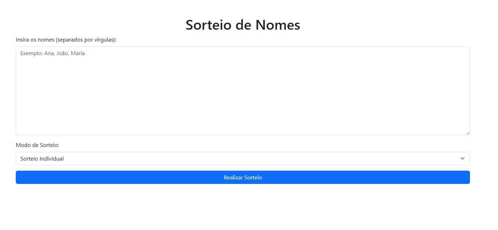

01 / PRODUTO PRINCIPAL
MarketFlow
PDV e estoque offline-first para pequenos comércios. React/Vite no frontend, Zustand, Dexie.js, Node/Express, Prisma, PostgreSQL, scanner por câmera, PWA e PIX dinâmico via Mercado Pago.
PDV e estoque offline-first para pequenos comércios. React/Vite no frontend, Zustand, Dexie.js, Node/Express, Prisma, PostgreSQL, scanner por câmera, PWA e PIX dinâmico via Mercado Pago.

Site com cards, notícias e integração com API, pensado para dar presença digital a uma iniciativa de impacto social.

Aplicação web de sorteio com interface direta, responsiva e foco em velocidade de uso.
Plataforma para barbearias com Next.js no frontend, Express + MySQL no backend, autenticação JWT, roles CLIENT/BARBER/ADMIN, painel administrativo, agenda por slots e pagamentos PIX com webhook HMAC.
API Node/Express com PostgreSQL, autenticação JWT, validação de senha forte, catálogo de produtos e frontend de loja com rotas protegidas.
Projeto web que traduz valores financeiros em impacto social, convertendo recursos em cestas básicas e estimando cobertura populacional por estado com integração à API do IBGE.
Por isso penso em separação de responsabilidades, autenticação, modelagem de dados, estados offline, observabilidade, segurança básica, versionamento e possibilidade de evolução.